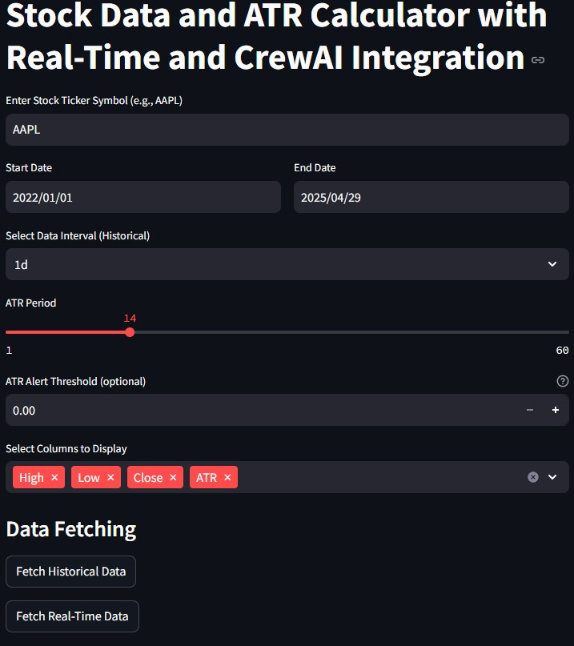
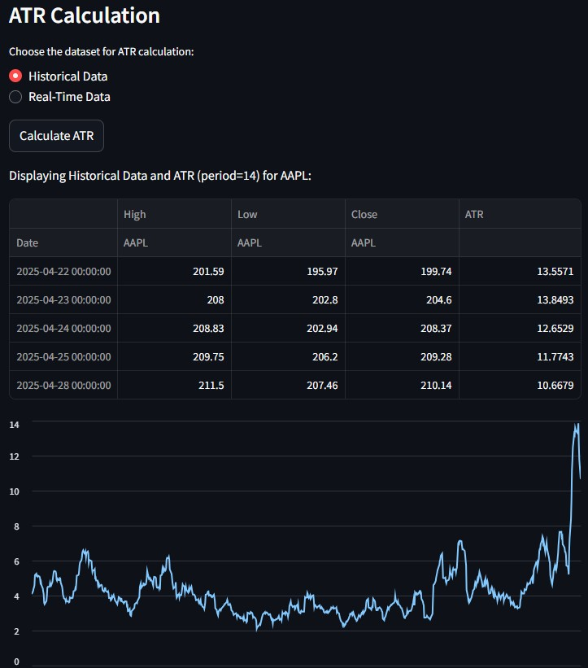
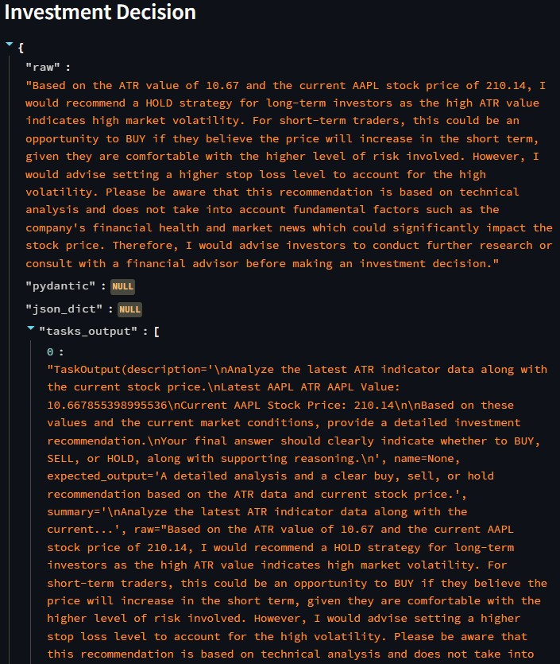
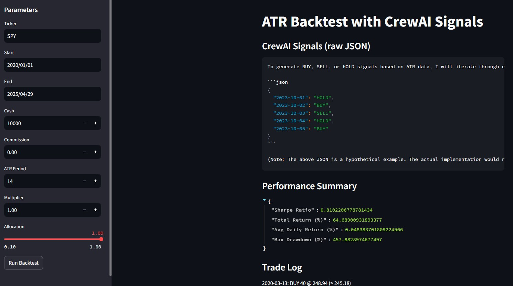
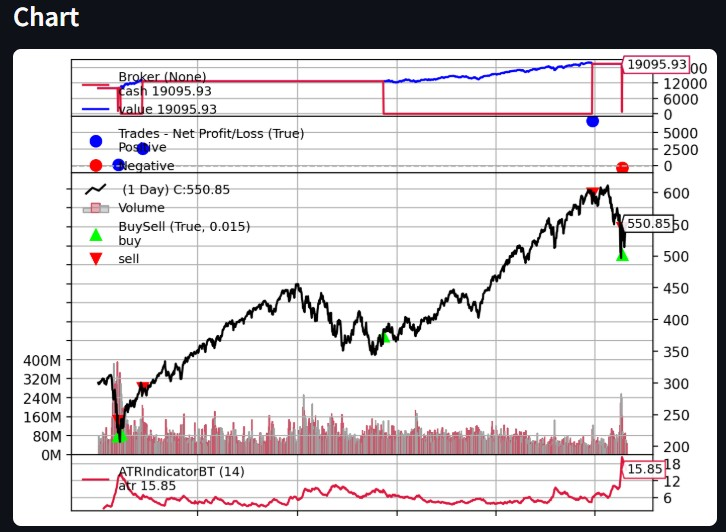

Introduction
In today’s fast-moving markets, individual traders face challenges in quantifying market volatility and timing their entries and exits. Manually calculating the Average True Range (ATR) indicator—a measure of volatility introduced by J. Welles Wilder—can be error-prone and time-consuming, while many existing analytics platforms lack seamless integration with AI-driven decision support. This project delivers a Streamlit application that automatically ingests historical and real-time stock data, computes ATR to assess volatility bands, and employs CrewAI agents to analyze ATR deviations in the context of current price action. By automating data retrieval, indicator computation, and AI-driven analysis, our solution provides clear buy, sell, or hold recommendations, enabling users to execute more informed trades with minimal manual overhead.
Project Overview
The following summarizes the main objectives achieved in each sprint.
| Sprint | Objective |
|---|---|
| Sprint 1 | Minimal Viable Product: ATR calculation + data fetching |
| Sprint 2 | Customization & real-time data integration with CrewAI |
| Sprint 3 | Investment-decision support & performance testing |
| Sprint 4 | Unit/integration tests and backtesting framework |
User Stories & Tasks Summary
Key tasks I completed):
| Task ID | Description | Status | Hours |
|---|---|---|---|
| ATR.1 | Implement ATR indicator calculation | Completed | 25 |
| ATR.3 | Integrate real-time & historical data | Completed | 20 |
| ATR.8 | Develop CrewAI investment-advisor agent | Completed | 39 |
| ATR.10 | Ensure performance & scalability | Completed | 16 |
| ATR.11 | Implement backtesting framework | Completed | 28 |
Each user story encapsulates a critical functional requirement:
- ATR.1: Developed the ATR calculation engine using high, low, and close price series to accurately measure volatility over a rolling window.
- ATR.3: Integrated both historical daily data and 1-minute real-time feeds to ensure the ATR indicator reflects live market conditions.
- ATR.8: Designed and implemented the CrewAI investment-advisor agent that consumes ATR values and current market price to generate dynamic trade recommendations.
- ATR.10: Built a comprehensive suite of unit and integration tests covering data ingestion, indicator computation, and agent logic to guarantee system reliability.
- ATR.11: Extended the platform with a backtesting framework that simulates historical performance of ATR-based signals, demonstrating the strategy’s effectiveness.
Code & Contributions
- View Source on GitHub
- Screenshots of key contributions:





Full Commit History
| Date | Commit | Description | Story | Task |
|---|---|---|---|---|
| Feb 3, 2025 | f49584aaf6 | Adding ATR code | ATR | ATR.1 |
| Feb 8, 2025 | ee8fd03cdd | ATR Customization features | ATR | ATR.3 |
| Feb 15, 2025 | 2630b9f661 | ATR.3 real time data | ATR | ATR.3 |
| Mar 17, 2025 | 48b5fd0084 | Integrate CrewAI ATR Advisor | ATR | ATR.8 |
| Apr 1, 2025 | 5c87852204 | Add testing code for ATR | ATR | ATR.10 |
| Apr 22, 2025 | b4d36f7eb5 | ATR Backtesting | ATR | ATR.11 |